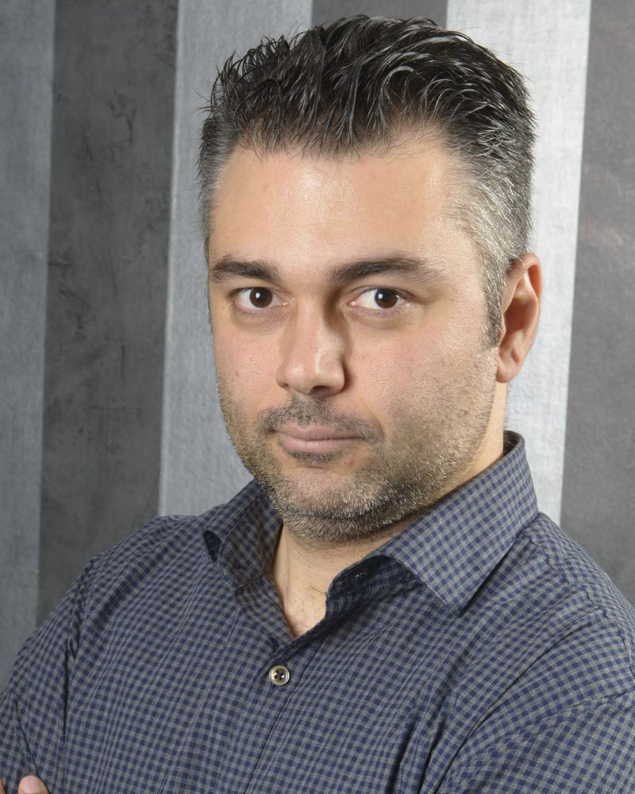

Sports Analytics · Data · Books · Films
Antonis Nikolitsopoulos
Football pricing as a profession; understanding the game through data as an obsession. Beyond the models: books on sports analytics, decision-making and personal development that sharpen judgement, and world cinema, the quieter, braver films that broaden perspective and leave a lasting mark.

About
Turning data into prices, and curiosity into writing.
Football trading, pricing pre-event soccer markets at scale.
The work combines pre-event pricing and quantitative modelling with building the teams and processes that turn data into prices.
The same discipline carries into independent projects. Two publications cover subjects that fuel life outside work. The Edge distils books on analytics, decision-making, management and personal development into practical takeaways. What Algo Missed is a guide to thought-provoking world cinema, curated film by film. And analytics hubs for PAOK, a lifelong passion.
- Field
- Football trading & pricing
- Expertise
- Pre-event pricing · Quantitative modelling · Building teams
- Based in
- Thessaloniki, Greece
Publications
Books & Films
Two side projects that began as personal notes: one for the books that change how we think, one for the films that change how we see.
The Edge
Every good book leaves a few ideas worth keeping. The Edge keeps them: practical takeaways on sports analytics, decision-making and personal development, for anyone trying to think a little more clearly, at work and in life.
analyticsports.substack.com → World cinemaWhat Algo Missed
Some films take years to find you. What Algo Missed shortens the wait: a personal map of world cinema, from Denmark to Iran, where every film earned its place on merit alone.
whatalgomissed.com →Latest
Fresh from both
What Algo Missed
Side projects
PAOK, in numbers
Independent analytics hubs for PAOK, a lifelong passion: football and basketball.
PAOK Hub
Player ratings and profiles, fixtures and match reports, head-to-heads against the Big-3 and the rest of the league, referee analysis and expected league tables.
Open the hub → Stats hub · PAOK BasketballPAOK Basketball
Everything about PAOK's basketball season in one place: roster, schedule, team and player stats, and standings, built on official league data.
Open the hub →